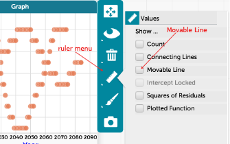

How can I look for patterns?
Graphs are wonderful for noticing patterns – much better than a list of
numbers!
-
When you want to compare two variables, make a new graph with one
variable on each axis.
-
Focus on the shape of the graph first. How would you describe the
relationship in words? Are there any points that seem out of place?
- Add summary statistics to the graph from the ruler menu
-
Compare the shape to a movable line using the ruler menu.

Back:
How can I look at only part of my data?